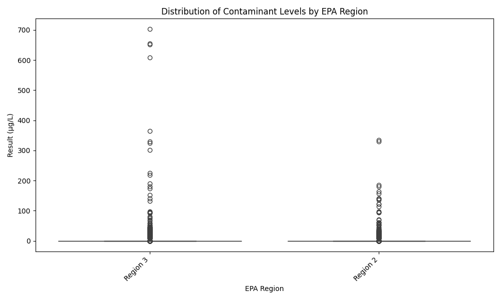
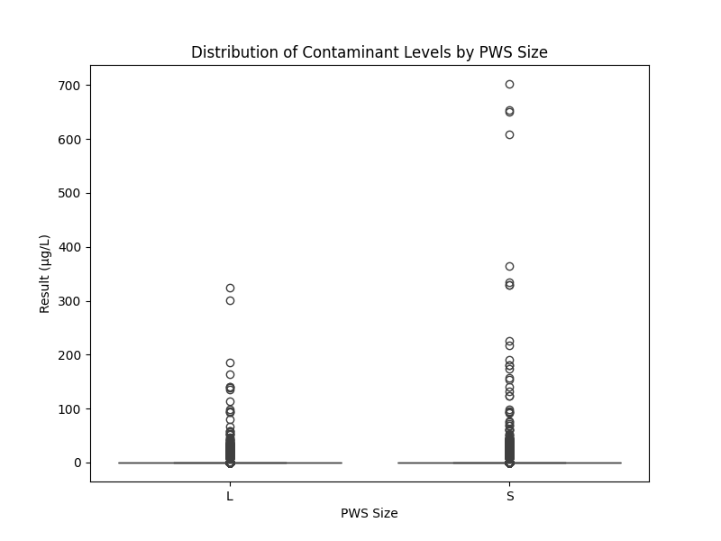
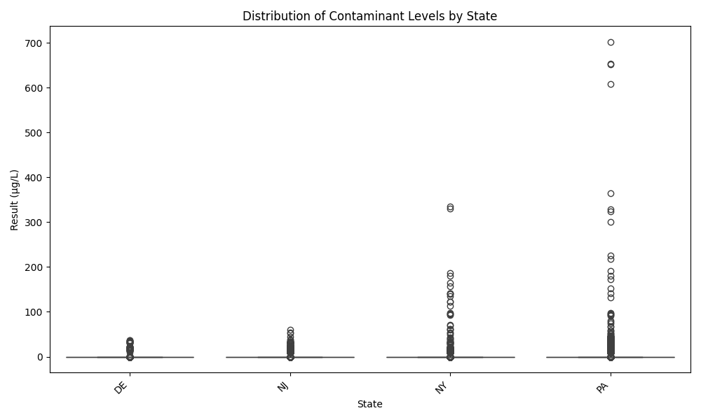
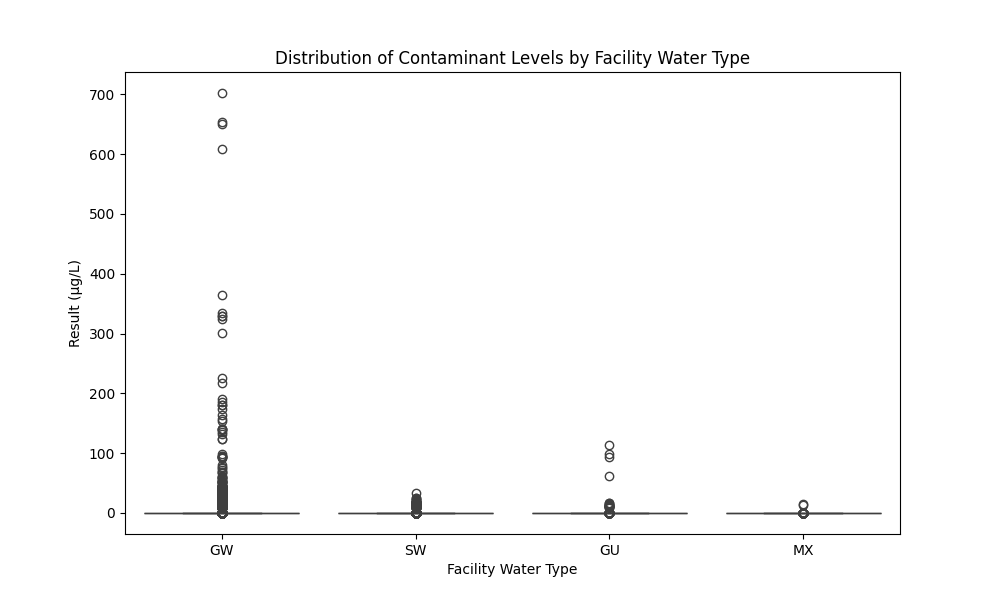

This map shows the changes in contaminant concentration by zip code as reported by the EPA. Note: Of nearly 188,000 rows of data for New Jersey, New York, Pennsylvania and Delaware, approximately 1,300 did not have available location information.
Contaminant Trends Over Time
The changes over time in collection regarding lithium yields interesting reporting questions. There were nearly 6,500 rows that included finding a report of lithium found in testing of a PWS. Is there a seasonal impact on level of lithium? Do certain locations have a higher concentration?

These box plots represent different ways of looking at the data. It's helpful to see different contaminant levels, how the levels change over time depending on the region, how each state's concentrations differ, if the PWS size had any impact, etc. These charts lead to reporting questions: Why are small PWSs showing signs of higher concentration levels? Wouldn't you expect that to happen to a larger PWS? How does the EPA define the difference? Does groundwater cause more contaminantion than sewage systems?
Boxplot of Contaminant Levels

Distribution by EPA region
Distribution by Public Water System Size
Distribution by State
Top Contaminants
Distribution by Contaminated-Water Type
Further questions: How can I use the population counts by county along the Delaware River and compare that to contamination levels? There are nearly 40,000 results located within 20 miles of the Delaware River. Is any of this important? Need to offer data analysis of what these mean: UCMR5 data dictionary, result level definitions, limitations in reporting from EPA & large dataset analysis, etc.